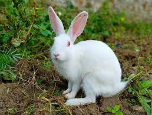
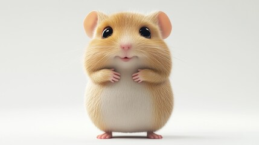
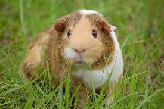
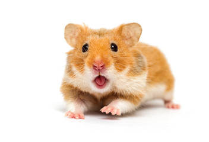

Rabbits
Cozy Critters Stay started with one very simple thought: small animals deserve care that feels intentionally made for them, not care that is adjusted at the last minute.
We kept noticing how easily hamsters, guinea pigs, rabbits, and other tiny companions can feel overwhelmed by loud surroundings, quick handling, and spaces that are not truly prepared for their needs. That is what pushed us to imagine a stay that would feel calmer, cleaner, and more reassuring from the very first moment.
What began as a small idea slowly turned into a warm boarding space built around gentle routines, tidy enclosures, soft observation, and little details that help tiny pets settle more comfortably. We also wanted pet parents to feel the same comfort, which is why clear updates and thoughtful care became part of the experience from the beginning.
Even now, that cozy beginning still guides everything we do. For us, it is not just about keeping a pet safe for a few days. It is about creating a stay that feels peaceful, caring, and genuinely suited to the smallest members of the family.


Rabbits

Guinea Pigs
At Cozy Critters Stay, we focus on calm, clean, and reassuring care for the tiny companions families trust us with. Our boarding spaces are prepared with fresh bedding, tidy feeding zones, gentle routines, and a quieter atmosphere that helps little guests settle more comfortably.
We understand that small animals can be sensitive to sudden noise, fast handling, and unfamiliar surroundings. That is why every stay is planned with patience, observation, and the little details that make their environment feel softer, safer, and more thoughtfully prepared.
From playful hamsters to gentle rabbits and delicate pocket pets, our goal is always the same: give each guest a stay that feels peaceful for them and reassuring for their owners.

Tiny Companions

Quiet Rest Spaces

Hamsters
Small animals notice noise, speed, unfamiliar touch, and sudden changes much more quickly than people expect. That is why our approach is built to feel slower, softer, and more reassuring from start to finish.
Even quick noise, sudden movement, or unfamiliar surroundings can affect how safe and settled they feel.
Quieter rooms and steadier routines give tiny companions a better chance to eat, rest, and adjust naturally.
Soft check-ins, familiar timing, and patient observation make the whole stay feel safer and more predictable.
Every guest follows a calm little rhythm from bright, tidy daytime care to a softer, quieter night routine that helps them settle well.
Day Care
Night Care
Your pet's safety is our top priority. We maintain:
Before each guest settles in, we prepare their space carefully so the stay feels cleaner, calmer, and more reassuring from the very beginning.
Fresh bedding, tidy surfaces, and routine refreshes help each stay begin cleanly.
Every guest has their own prepared space so routines stay calmer and more controlled.
Setup choices are selected to feel softer, safer, and better suited for tiny companions.
We keep a close eye on comfort, rest, and routine so your pet stays well looked after.